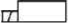
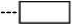
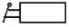
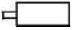
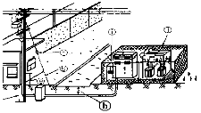

지게차운전기능사 (2008-07-13 기출문제)
1. 운전 중인 기관의 에어크리너가 막혔을 때 나타나는 현상으로 가장 적당한 것은?
- 배출가스 색은 검고 출력은 저하한다.
- 배출가스 색은 희고 출력은 정상이다.
- 배출가스 색은 청백색이고 출력은 증가 된다.
- 배출가스 색은 무색이고 출력과는 무관하다.
(정답률: 95%)

2. 기관에서 피스톤링의 작용으로 틀린 것은?
- 기밀 작용
- 완전 연소 억제작용
- 오일제어 작용
- 열전도 작용
(정답률: 56%)
3. 기관을 시동하기 전에 점검할 사항과 가장 관계가 먼 것은?
- 연료의 량
- 냉각수 및 엔진오일의 량
- 기관 오일의 온도
- 유압유의 량
(정답률: 71%)
4. 기관에서 팬벨트의 장력이 너무 강할 경우에 발생 될 수 있는 현상은?(오류 신고가 접수된 문제입니다. 반드시 정답과 해설을 확인하시기 바랍니다.)
- 기관이 과열된다.
- 충전부족 현상이 생긴다.
- 발전기 베어링이 손상된다.
- 기관이 과냉된다.
(정답률: 47%)
5. 방열기에 물이 가득 차 있는데도 기관이 과열되는 원인으로 맞는 것은?
- 팬벨트의 장력이 세기 때문
- 사계절용 부동액을 사용했기 때문
- 정온기가 열린 상태로 고장 났기 때문
- 라디에이터의 팬이 고장이 났기 때문
(정답률: 67%)
6. 디젤기관의 진동 원인과 가장 거리가 먼 것은?
- 각 실린더의 분사압력과 분사량이 다르다.
- 분사시기, 분사간격이 다르다.
- 윤활 펌프의 유압이 높다.
- 각 피스톤의 중량차가 크다.
(정답률: 59%)
7. 다음 중 디젤 기관에만 있는 부품은?
- 워터펌프
- 오일펌프
- 발전기
- 분사펌프
(정답률: 59%)
8. 디젤엔진의 연료탱크에서 분사노즐까지 연료의 순환 순서로 맞는 것은?
- 연료탱크→연료공급 펌프→분사펌프→연료필터→분사노즐
- 연료탱크→연료필터→분사펌프→연료공급 펌프→분사노즐
- 연료탱크→연료공급 펌프→연료필터→분사펌프→분사노즐
- 연료탱크→분사펌프→연료필터→연료공급 펌프→분사노즐
(정답률: 75%)
9. 디젤 노크의 방지방법으로 가장 적합한 것은?
- 착화지연시간을 길게 한다.
- 압축비를 높게 한다.
- 흡기압력을 낮게 한다.
- 연소실 벽의 온도를 낮게 한다.
(정답률: 54%)
10. 디젤기관에서 연료장치의 구성 부품이 아닌 것은?
- 분사펌프
- 연료필터
- 기화기
- 연료탱크
(정답률: 83%)
11. 기관에 사용되는 오일 여과기에 대한 사항으로 틀린 것은?
- 여과기가 막히면 유압이 높아진다.
- 엘리먼트 청소는 압축공기를 사용한다.
- 여과 능력이 불량하면 부품의 마모가 빠르다.
- 작업 조건이 나쁘면 교환 시기를 빨리한다.
(정답률: 54%)
12. 엔진오일 압력 경고등이 켜지는 경우가 아닌 것은?
- 오일이 부족할 때
- 오일 필터가 막혔을 때
- 가속을 하였을 때
- 오일 회로가 막혔을 때
(정답률: 80%)
13. 운전 중 갑자기 계기판에 충전 경고등이 점등되었다. 그 현상으로 맞는 것은?
- 정상적으로 충전이 되고 있음을 나타낸다.
- 충전이 되지 않고 있음을 나타낸다.
- 충전계통에 이상이 없음을 나타낸다.
- 주기적으로 점등되었다가 소등되는 것이다.
(정답률: 85%)
14. 20℃에서 전해액의 비중이 1.280 이면 어떤 상태인가?
- 완전 충전
- 반 충전
- 완전 방전
- 2/3 방전
(정답률: 59%)
15. 퓨즈에 대한 설명 중 틀린 것은?
- 퓨즈는 정격용량을 사용한다.
- 퓨즈 용량은 A로 표시한다.
- 퓨즈는 철사로 대용하여도 된다.
- 퓨즈는 표면이 산화되면 끊어지기 쉽다.
(정답률: 85%)
16. 건설기계장비의 축전지 케이블 탈거에 대한 설명으로 적합한 것은?
- 절연되어 있는 케이블을 먼저 탈거한다.
- 아무 케이블이나 먼저 탈거한다.
- 케이블을 먼저 탈거한다.
- 접지되어 있는 케이블을 먼저 탈거한다.
(정답률: 62%)
17. 다음 중 교류 발전기의 부품이 아닌 것은?
- 다이오드
- 슬립링
- 스테이터 코일
- 전류 조정기
(정답률: 44%)
18. 건설기계장비가 시동이 되지 않아 시동장치를 점검하고 있다. 적절하지 않은 것은?
- 마그네트 스위치 점검
- 기동전동기의 고장 여부 점검
- 발전기의 성능 점검
- 축전지의 ＋선 접촉상태 점검
(정답률: 49%)
19. 트랙장치에서 트랙과 아이들러의 충격을 완화시키기 위해 설치한 것은?
- 스프로킷
- 리코일 스프링
- 상부 롤러
- 하부 롤러
(정답률: 67%)
20. 타이어의 트레드에 대한 설명으로 틀린 것은?
- 트레드가 마모되면 구동력과 선회능력이 저하된다.
- 트레드가 마모되면 지면과 접촉 면적이 크게 됨으로써 마찰력이 증대되어 제동성능은 좋아진다.
- 타이어의 공기압이 높으면 트레드의 양단부보다 중앙부의 마모가 크다.
- 트레드가 마모되면 열의 발산이 불량하게 된다.
(정답률: 76%)
21. 기중기의 사용 용도로 적합하지 않은 것은?
- 파일 항타 작업
- 화물 적하작업
- 경지정리 작업
- 크레인 작업
(정답률: 64%)
22. 화물을 적재하고 주행할 때 포크와 지면과의 간격으로 가장 적합한 것은?
- 지면에 밀착
- 20 ~ 30cm
- 50 ~ 55cm
- 80 ~ 85cm
(정답률: 84%)
23. 동력전달장치에서 클러치판은 어떤 축의 스플라인에 끼워져 있는가?
- 추진축
- 차동기어 장치
- 크랭크축
- 변속기 입력축
(정답률: 49%)
24. 동력전달장치에 사용되는 차동기어장치에 대한 설명으로 틀린 것은?
- 선회할 때 좌?우 구동바퀴의 회전속도를 다르게 한다.
- 선회할 때 바깥쪽 바퀴의 회전속도를 증대 시킨다.
- 보통 차동 기어장치는 노면의 저항을 작게 받는 구동바퀴의 회전속도가 빠르게 될 수 있다.
- 기관의 회전력을 크게 하여 구동 바퀴에 전달한다.
(정답률: 43%)
25. 타이어식 로더가 무한 궤도식 로더에 비해 가장 좋은 점은?
- 기동성
- 견인력
- 습지에서의 작업성
- 비포장도로에서의 작업성
(정답률: 73%)
26. 유압식 굴삭기의 주행 동력으로 이용되는 것은?
- 유압 모터
- 전기 모터
- 변속기 동력
- 차동 장치
(정답률: 70%)
27. 건설기계의 소유자는 다음 어느 령이 정하는 바에 의하여 건설기계의 등록을 하여야 하는가?
- 대통령령
- 노동부령
- 총리령
- 행정안전부령
(정답률: 52%)
28. 건설기계 구조변경범위에 포함되지 않는 사항은?
- 원동기의 형식변경
- 제동장치의 형식변경
- 조종장치의 형식변경
- 충전장치의 형식변경
(정답률: 59%)
29. 도로 교통법상에서 교통 안전표지의 구분이 맞는 것은?
- 주의표지, 통행표지, 규제표지, 지시표지, 차선표지
- 주의표지, 규제표지, 지시표지, 보조표지, 노면표지
- 도로표지, 주의표지, 규제표지, 지시표지, 노면표지
- 주의표지, 규제표지, 지시표지, 차선표지, 도로표지
(정답률: 65%)
30. 도로교통법상 서행 또는 일시 정지할 장소로 지정된 곳은?
- 안전지대 우측
- 가파른 비탈길의 내리막
- 좌우를 확인할 수 있는 교차로
- 교량 위를 통행할 때
(정답률: 35%)
31. 원동기 전문 건설기계 정비업의 사업범위에 속하지 않는 것은?
- 실린더 헤드의 탈착정비
- 연료펌프 분해정비
- 크랭크샤프트 분해정비
- 변속기 분해정비
(정답률: 37%)
32. 긴급 자동차의 우선통행에 관한 설명이 잘못된 것은?
- 소방자동차, 구급 자동차는 항상 우선권과 특례의 적용을 받는다.
- 긴급 용무중일 때에만 우선통행 특례의 적용을 받는다.
- 우선특례의 적용을 받으려면 경광등을 켜고 경음기를 울려야 한다.
- 긴급 용무임을 표시할 때는 제한속도 준수 및 앞지르기 금지, 끼어들기 금지 의무 등의 적용은 받지 않는다.
(정답률: 68%)
33. 건설기계장비의 제동장치에 대한 정기검사를 면제 받고자하는 경우 첨부하여야 하는 서류는?
- 건설기계매매업 신고서
- 건설기계대여업 신고서
- 건설기계제동장치정비확인서
- 건설기계 폐기업 신고서
(정답률: 84%)
34. 승차인원·적재중량에 관하여 안전기준을 넘어서 운행하고자 하는 경우 누구에게 허가를 받아야 하는가?(오류 신고가 접수된 문제입니다. 반드시 정답과 해설을 확인하시기 바랍니다.)
- 출발지를 관할하는 경찰서장
- 시·도지사
- 절대 운행 불가
- 국토해양부 장관
(정답률: 55%)
35. 건설기계의 조종 중 과실로 100만원의 재산피해를 입힌 때 면허 처분 기준은?(관련 규정 개정전 문제로 여기서는 기존 정답인 2번을 누르면 정답 처리됩니다. 자세한 내용은 해설을 참고하세요.)
- 면허 효력정지 7일
- 면허 효력정지 10일
- 면허 효력정지 15일
- 면허 효력정지 20일
(정답률: 59%)
36. 도로교통법상 술에 취한 상태의 기준으로 맞는 것은?(관련 규정 개정전 문제로 여기서는 기존 정답인 3번을 누르면 정답 처리됩니다. 자세한 내용은 해설을 참고하세요.)
- 혈중알콜농도 0.01% 이상을 기준으로 함
- 혈중알콜농도 0.02% 이상을 기준으로 함
- 혈중알콜농도 0.⑤% 이상을 기준으로 함
- 혈중알콜농도 0.1% 이상을 기준으로 함
(정답률: 75%)
37. 유압회로에서 유압유의 점도가 높을 때 발생 될 수 있는 현상이 아닌 것은?
- 관내의 마찰 손실이 커진다.
- 동력 손실이 커진다.
- 열 발생의 원인이 될 수 있다.
- 유압이 낮아진다.
(정답률: 68%)
38. 유압 펌프 관련 용어에서 GPM이 나타내는 것은?
- 복동 실린더의 치수
- 계통 내에서 형성되는 압력의 크기
- 흐름에 대한 저항
- 계통 내에서 이동되는 유체(오일)의 양
(정답률: 47%)
39. 2개 이상의 분기 회로가 있을 때 순차적인 작동을 하기 위한 압력제어 밸브는?
- 시퀀스밸브
- 감압밸브
- 릴리프밸브
- 리듀싱밸브
(정답률: 70%)
40. 유압모터의 용량을 나타내는 것은?
- 입구압력(kgf/㎠)당 토크
- 유압작동부 압력(kgf/㎠)당 토크
- 주입된 동력(HP)
- 체적(㎤)
(정답률: 44%)
41. 유압유 성질 중 가장 중요한 것은?
- 점도
- 온도
- 습도
- 열효율
(정답률: 81%)
42. 유압유의 압력에너지(힘)를 기계적 에너지(일)로 변환시키는 작용을 하는 것은?
- 유압펌프
- 유압밸브
- 어큐뮬레이터
- 액추에이터
(정답률: 60%)
43. 방향전환 밸브의 조작 방식에서 단동 솔레노이드 기호는?




(정답률: 55%)
44. 건설기계 장비의 유압장치 관련 취급시 주의사항으로 적절하지 않은 것은?
- 작동유가 부족하지 않은지 점검하여야 한다.
- 유압장치는 워밍업 후 작업하는 것이 좋다.
- 오일량을 1주 1회 소량 보충한다.
- 작동유에 이물질이 포함되지 않도록 관리 취급하여야 한다.
(정답률: 79%)
45. 유압장치의 고장원인과 거리가 먼 것은?
- 작동유의 과도한 온도 상승
- 작동유에 공기, 물 등의 이물질 혼입
- 조립 및 접속 불완전
- 윤활성이 좋은 작동유 사용
(정답률: 83%)
46. 유압 컨트롤 밸브 내에 스풀 형식의 밸브가 사용되는 이유는?
- 오일의 흐름 방향을 바꾸기 위해
- 계통 내의 압력을 상승시키기 위해
- 축압기의 압력을 바꾸기 위해
- 펌프의 회전방향을 바꾸기 위해
(정답률: 51%)
47. 화재의 분류에서 전기 화재에 해당되는 것은?
- A급 화재
- B급 화재
- C급 화재
- D급 화재
(정답률: 68%)
48. 안전모에 대한 설명으로 적합하지 않은 것은?
- 안전모 착용으로 불안전한 상태를 제거한다.
- 올바른 착용으로 안전도를 증가시킬 수 있다.
- 안전모의 상태를 점검하고 착용한다.
- 혹한기에 착용하는 것이다.
(정답률: 88%)
49. 스패너 작업 방법으로 안전상 올바른 것은?
- 스패너로 볼트를 죌 때는 앞으로 당기고 풀 때는 뒤로 민다.
- 스패너의 입이 너트의 치수보다 조금 큰 것을 사용한다.
- 스패너 사용시 몸의 중심을 항상 옆으로 한다.
- 스패너로 죄고 풀 때는 항상 앞으로 당긴다.
(정답률: 52%)
50. 안전관리상 보안경을 사용해야 하는 작업과 가장 거리가 먼 것은?
- 장비 밑에서 정비 작업을 할 때
- 산소 결핍 발생이 쉬운 장소에서 작업을 할 때
- 철분, 모래 등이 날리는 작업을 할 때
- 전기용접 및 가스용접 작업을 할 때
(정답률: 79%)
51. 감전되거나 전기화상을 입을 위험이 있는 곳에서 작업시 작업자가 착용해야 할 것은?
- 구명구
- 보호구
- 구명조끼
- 비상벨
(정답률: 85%)
52. 인력으로 운반작업을 할 때 틀린 것은?
- 드럼통과 LPG 봄베는 굴려서 운반한다.
- 공동운반에서는 서로 협조를 하여 작업한다.
- 긴 물건은 앞쪽을 위로 올린다.
- 무리한 몸가짐으로 물건을 들지 않는다.
(정답률: 68%)
53. 안전·보건표지의 종류와 형태에서 그림과 같은 표지는?
- 인화성물질 경고
- 금연
- 화기금지
- 산화성물질 경고
(정답률: 57%)
54. 수공구 취급시 지켜야 될 안전수칙으로 옳은 것은?
- 줄질 후 쇳가루는 입으로 불어 낸다.
- 해머 작업시 손에 장갑을 끼고 한다.
- 사용 전에 충분한 사용법을 숙지하고 익히도록 한다.
- 큰 회전력이 필요한 경우 스패너에 파이프를 끼워서 사용한다.
(정답률: 79%)
55. 작업장에 대한 안전관리상 설명으로 틀린 것은?
- 항상 청결하게 유지한다.
- 작업대 사이, 또는 기계 사이의 통로는 안전을 위한 일정한 너비가 필요하다.
- 공장바닥은 폐유를 뿌려, 먼지 등이 일어나지 않도록 한다.
- 전원 콘센트 및 스위치 등에 물을 뿌리지 않는다.
(정답률: 88%)
56. 가스장치의 누출 여부 및 위치를 정확하게 확인하는 방법으로 맞는 것은?
- 분말 소화기 사용
- 소리로 감지
- 비눗물 사용
- 냄새로 감지
(정답률: 82%)
57. 도로상에 가스배관이 매설된 것을 표시하는 라인마크에 대한 설명으로 틀린 것은?
- 직경이 9cm 정도인 원형으로 된 동합금이나 황동주물로 되어 있다.
- 도시가스라고 표기되어 있으며 화살표가 표시되어 있다.
- 분기점에는 T형 화살표가 표시되어 있고, 직선구간에는 배관길이 50m 마다 1개 이상 설치되어 있다.
- 청색으로 된 원형 마크로 되어 있고 화살표가 표시되어 있다.
(정답률: 54%)
58. 그림은 시가지에서 시설한 고압 전선로에서 자가용 수용가에 구내 전주를 경유하여 옥외 수전설비에 이르는 전선로 및 시설의 실체도이다. ⓗ로 표시된 곳과 같은 지중 전선로 차도 부분의 매설 깊이는 최소 몇 m이상인가?

- 1.2m
- 1m
- 0.75m
- 0.5m
(정답률: 61%)
59. 폭 4m이상, 8m미만인 도로에 일반 도시가스 배관을 매설시 지면과 도시가스 배관 상부와의 최소 이격 거리는 몇 m 이상인가?(오류 신고가 접수된 문제입니다. 반드시 정답과 해설을 확인하시기 바랍니다.)
- 0.6m
- 1.0m
- 1.2m
- 1.5m
(정답률: 36%)
60. 154kV 가공 송전선로 주변에서의 작업에 관한 설명으로 맞는 것은?
- 건설장비가 선로에 직접 접촉하지 않고 근접만 해도 사고가 발생 될 수 있다.
- 전력선은 피복으로 절연되어 있어 크레인 등이 접촉해도 단선되지 않는 이상 사고는 일어나지 않는다.
- 1회선은 3가닥으로 이루어져 있으며, 1가닥 절단시에도 전력공급을 계속한다.
- 사고 발생시 복구공사비는 전력설비가 공공 재산임으로 배상하지 않는다.
(정답률: 72%)